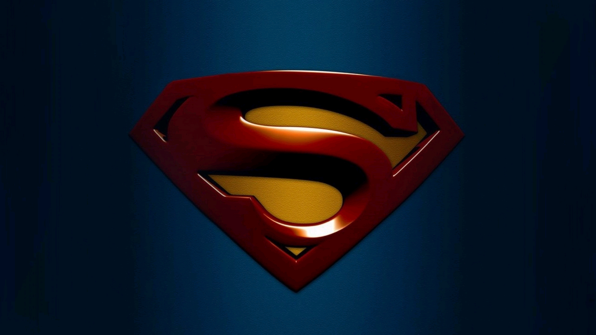
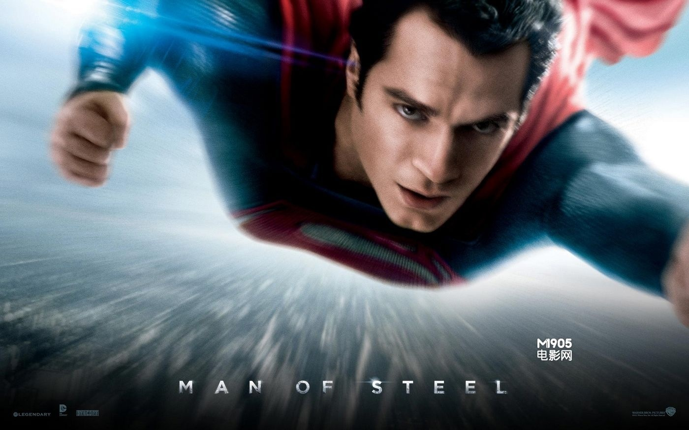

超人

遥远的宇宙深处，随着氪星的毁灭，超人的传奇故事拉开序幕。氪星人乔·艾尔抵死反抗佐德将军的邪恶计划，冒险将刚出生不久的儿子卡尔·艾尔被送到银河系另一边的地球。卡尔降落在美国堪萨斯一座小镇，他幸运地成为乔纳森·肯和玛莎的养子，并且得名克拉克。克拉克从小显露出与众不同的能力与特征，但这些带给他惊讶的同时还有数不清的烦恼。通过养父的引导，克拉克慢慢弄清自己的身世以及所肩负的使命。终于有一天，遥远的故乡“同胞”莅临。 站在故乡与地球、邪恶与正义的两端，超人即将面临重大的抉择……